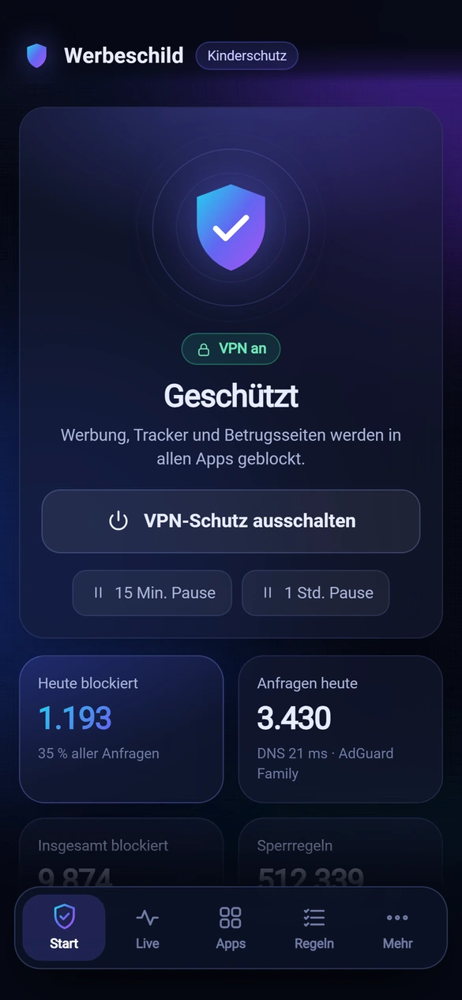
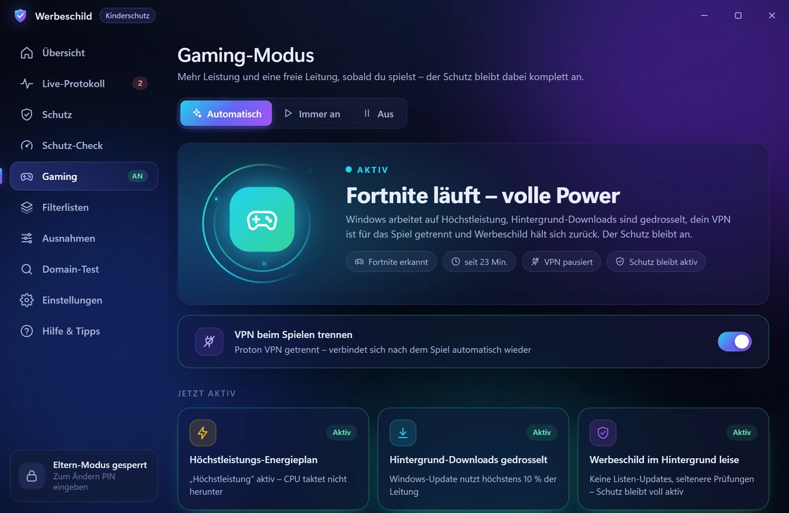

Ads & trackers gone
System-wide: in Chrome, Edge, Firefox, in apps and games. Hundreds of thousands of rules from well-known filter lists, always up to date.
Werbeschild blocks most ads, trackers, scam and gambling sites on your whole PC and phone – in browsers, apps and games. So kids don’t tap an ad by accident and end up buying something.
To be honest: not every ad can be blocked. What works for YouTube and Netflix is explained here – everything else in the FAQ.


Werbeschild works under the hood: before loading anything, every app asks for the address – and ad, tracker and scam addresses simply get no answer.
System-wide: in Chrome, Edge, Firefox, in apps and games. Hundreds of thousands of rules from well-known filter lists, always up to date.
Safe Google and Bing search, YouTube restricted mode, no way around it via other DNS servers or VPNs. Changes need the parent PIN.
Phishing, rip-offs, fake shops and gambling sites are blocked – before they even load.
Instead of a cryptic error, Werbeschild explains why a site is blocked. Parents unblock it with one click and the PIN.
Starts with your game: maximum performance, throttled background downloads, your VPN paused – and protection stays on.
The filter runs on your device. No account, no ads, no tracking. Updates are signed – only genuine Werbeschild versions get installed.
Once installed, Werbeschild runs quietly in the background. The dashboard shows what was blocked at any time.

Gaming mode · example view
The app filters only address lookups through a small local VPN. Your traffic never goes through someone else’s server, and it barely uses any battery.

Example views with demo numbers · the apps are in German
There the ads come from the same servers as the videos – a filter alone isn’t enough. So Werbeschild brings its own helpers. Here is what they can do, and what they can’t:
The browser plug-in Plus für YouTube removes the ads before and inside videos – with your normal YouTube account. When YouTube changes something, ads may get through for a short while until the plug-in is adapted.
Get the plug-inThe YouTube helper in the Werbeschild app mutes ads, dims them and skips them as soon as YouTube allows it. Ads in the YouTube app can’t be removed completely.
On the plan with ads, the browser plug-in removes ad breaks or fast-forwards them muted.
On the plan with ads, ad breaks are muted and dimmed. Netflix doesn’t allow skipping them in the app.
Two things are called “Plus für YouTube”: on the PC the browser plug-in for Edge, Chrome and Brave (with your YouTube account), and on the phone an extra app inside the Werbeschild app (YouTube without a Google account in its own, tidy view). On the PC, Werbeschild also sets up uBlock Origin (Firefox) or uBlock Origin Lite (Chrome, Edge, Brave).
One click – the download starts right away. Always the latest version. The apps are currently in German.
Installing needs administrator rights. Give kids a normal Windows account without administrator rights – then they can’t switch the protection off.
Download didn’t start? Try again
Google doesn’t allow system-wide ad blockers in the Play Store – so the app comes straight from here. The app finds new versions by itself and installs them with one tap.
Download didn’t start? Try again
edge://extensions (Edge) or chrome://extensions (Chrome, Brave).This takes more steps than usual because the plug-in isn’t in the browser store yet – once it is, one click will do. Until then the browser reminds you of developer mode at start-up, and you download new versions here again. For Edge, Chrome and Brave; there is no Firefox version yet. The plug-in’s menus are in German.
Download didn’t start? Try again
To protect every program, Werbeschild changes a few things in Windows during installation. Here is the full list – no small print:
Werbeschild for Windows updates itself – from version 1.0.4 on, the Android app finds new versions by itself too.
No. Werbeschild is free, without ads and without an account.
The filter runs entirely on your device. There is no account and no statistics sent to us.
To load anything, every device has to look up addresses – Werbeschild sends these lookups encrypted to a family DNS service (e.g. AdGuard DNS or Cloudflare) instead of unencrypted to your internet provider. Werbeschild checks GitHub for updates. More in the privacy policy (German).
Windows and Edge warn about programs that are new and don’t (yet) have an expensive code-signing certificate. In Edge: “…” → “Keep” → “Keep anyway”. When opening the file: “More info” → “Run anyway”.
Automatic updates are protected anyway: Werbeschild only installs updates signed with Werbeschild’s own key.
Google doesn’t allow system-wide ad blockers in the Play Store. So you download the app here; Android asks once whether your browser may install apps.
Honestly: ads in the YouTube app can’t be prevented completely, because they come from the same servers as the videos.
On the PC, the browser plug-in Plus für YouTube removes the ads in the browser; Werbeschild also sets up uBlock Origin (Firefox) or uBlock Origin Lite (Chrome, Edge, Brave). On the phone, the YouTube helper in the Werbeschild app mutes ads in the YouTube app, dims them and skips them as soon as possible. Details are under YouTube & Netflix.
It points the DNS setting to its own filter, adds a local certificate for the block page and sets browser policies (ad blocker; no incognito mode in child mode). The full list is under What does Werbeschild change on your PC? Uninstalling undoes everything.
On the PC, child mode locks all settings behind the parent PIN. Important: kids should use a normal Windows account without administrator rights – an administrator can switch off anything.
On the phone, Android lets you switch the VPN off in its settings. Werbeschild warns you, and Google Family Link or “Always-on VPN” prevent it – the app explains how.
On the PC, yes: VPN apps can be allowed, and gaming mode disconnects your VPN while you play and reconnects it afterwards.
On a phone only one VPN runs at a time. When Werbeschild is off, “Private DNS” keeps filtering ads.
On the PC: Windows Settings → Apps → Werbeschild → Uninstall (with the parent PIN in child mode). Every change to Windows is undone. On the phone, like any other app.